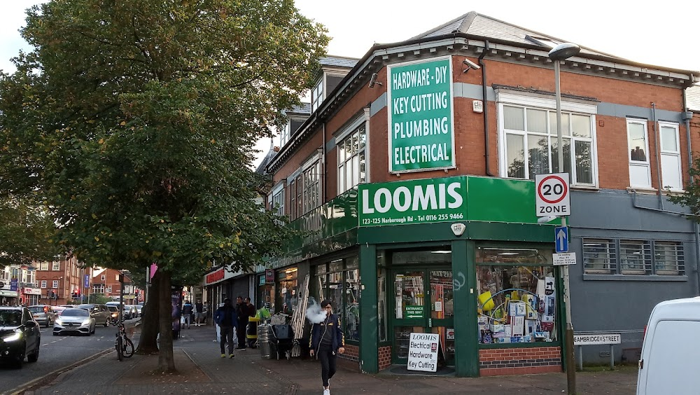
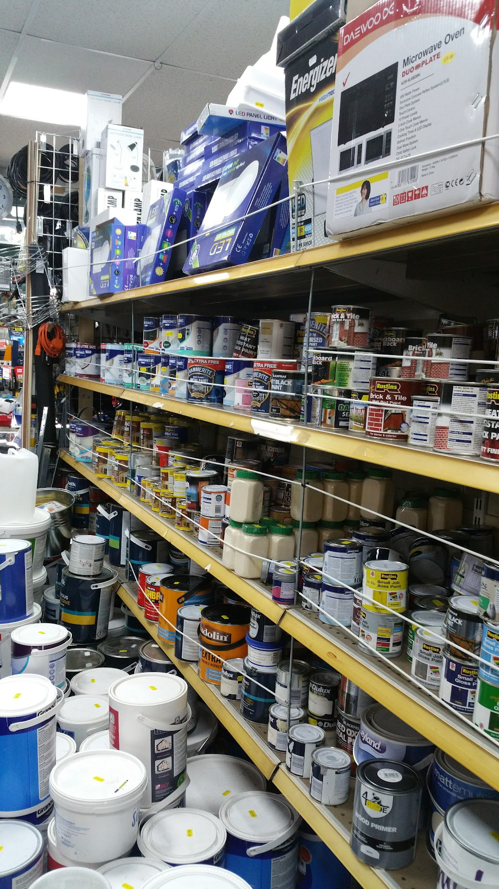
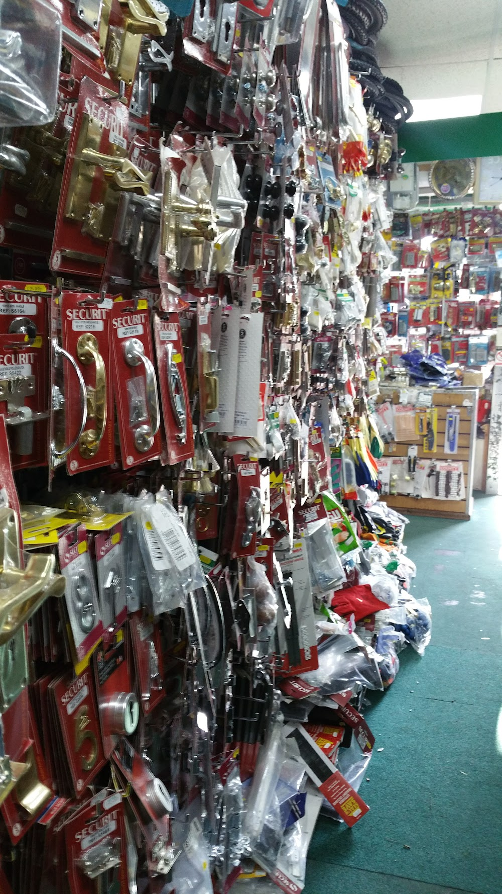
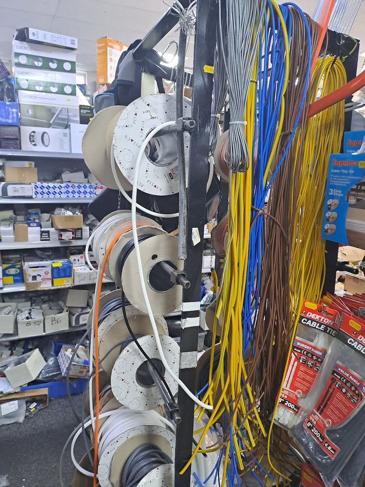
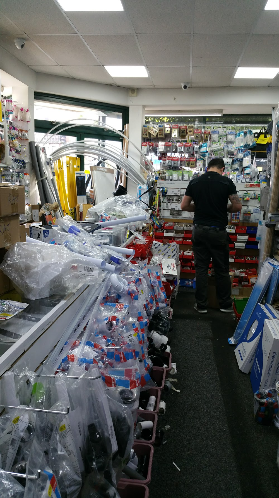

Customers highlight products that compare well with larger DIY stores.

125 Narborough Road, Leicester LE3 0PB
LOOMIS
Hardware, DIY, plumbing, electrical, paint, tools and key cutting for Leicester homes, landlords and trades.
Open todaySee full weekly hours below
Key cuttingFast local service
Call ahead0116 255 9466
On-site helpAsk for the right part
About Loomis
An Aladdin's cave for repairs, refits and everyday home jobs.
Loomis is a family-run hardware store in Leicester, known for high stock levels, practical customer service and a wide mix of tools, plumbing supplies, electrical components, paint, ironmongery and everyday DIY essentials. The shop also offers convenient key cutting, making it useful for quick purchases as well as small to medium projects.
A broad range, from batteries and tools to plumbing and electrical parts.
Competitive pricing for home repairs, landlords and trade essentials.
Helpful staff who can guide shoppers toward the right materials.

Paint & decorating
Paint, primers, brushes, fillers and prep supplies.

Ironmongery
Locks, handles, hinges, hooks and security hardware.

Electrical
Cable, lighting, batteries, switches and accessories.

Plumbing & fittings
Pipes, connectors, adhesives, tools and hard-to-find parts.
Popular in store
Everyday hardware, stocked for quick collection.
Reviewers regularly describe Loomis as an "Aladdin's cave" because of the depth of stock across tools, plumbing supplies, electrical components and home repair essentials.
Emulsion, gloss, primers, stain block and decorating tools.
Pipes, traps, washers, connectors, wastes and sealants.
Cable, lighting, plugs, sockets, switches and batteries.
Door handles, locks, hinges, hooks, bolts and security fittings.
Hand tools, blades, drill bits, tapes, adhesives and fixings.
Cleaning supplies, household repairs, plates, cutlery and useful home items.
What people come in for
Small parts, big jobs, quick answers.
Key cutting
Convenient local key cutting for everyday home and rental needs.
DIY essentials
Tools, fixings, sealants, adhesives, tapes, batteries and repair basics.
Electrical supplies
Cables, lighting, plugs, switches and parts for common electrical jobs.
Plumbing help
Bring the old part in and ask the team to help match a replacement.
Customer word
Praised for range, prices, key cutting and staff who know the shelves.
4.5Based on 600 reviews
"A very well-stocked local hardware shop with almost everything you need for DIY and home repairs. The staff are friendly, helpful, and always ready to guide you in finding the right tools and materials."
Joel Changayil Titus · 3 weeks ago
"They always have everything I ask for, it's magic."
Cronus Saturn · 4 months ago
"Excellent service, fully loaded with all types of hardware."
Edwintau Mazarura · 7 months ago
"Prices are reasonable compared to larger stores, and the service feels more personal. It’s a convenient place for quick purchases and small to medium project needs."
Joel Changayil Titus · 3 weeks ago
Visit the shop
Find Loomis on Narborough Road.
125 Narborough Rd, Leicester LE3 0PB
- Phone
- 0116 255 9466
- Address
- 125 Narborough Rd, Leicester LE3 0PB
- Hours
-
- Monday8:00 AM - 6:00 PM
- Tuesday8:00 AM - 6:00 PM
- Wednesday8:00 AM - 8:00 AM
- Thursday8:00 AM - 8:00 AM
- Friday8:00 AM - 8:00 AM
- Saturday8:00 AM - 8:00 AM
- SundayClosed
- Payments
- Cash, credit cards, debit cards and NFC mobile payments